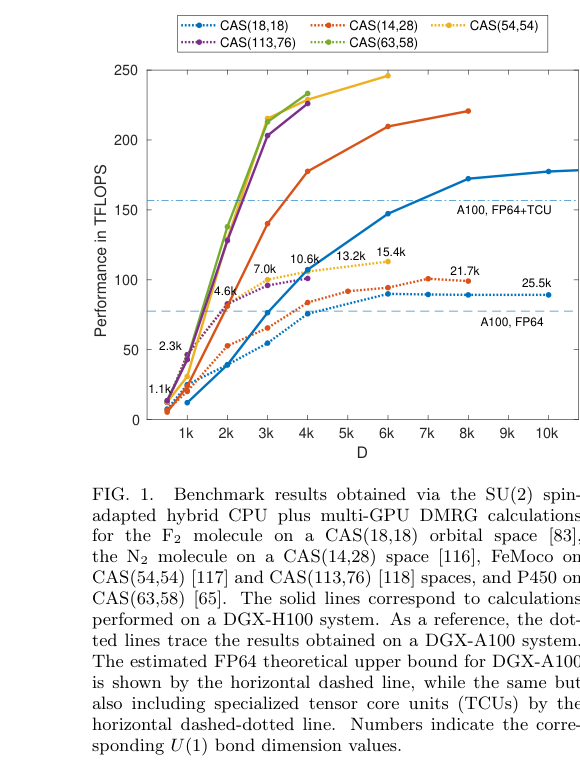
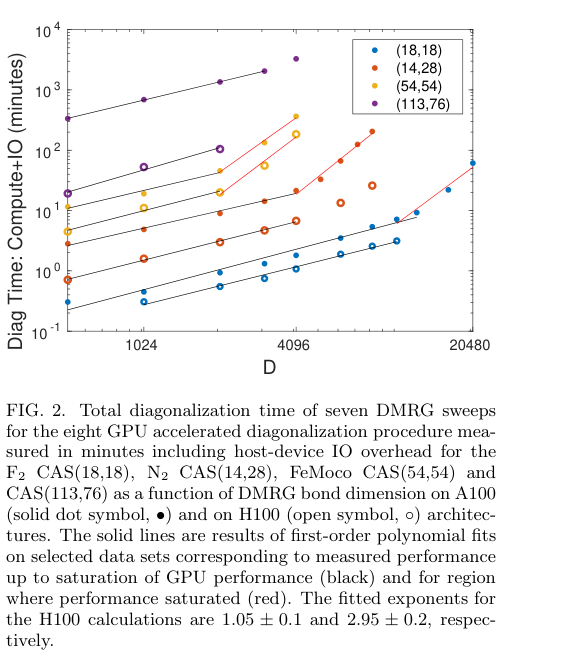
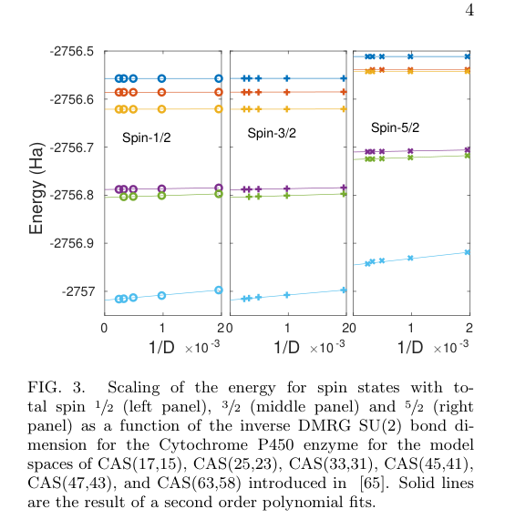
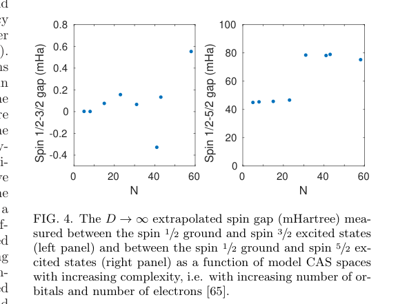

← Daily Papers
本报告由大模型自动生成，可能存在理解、归纳或数据转述错误；请以原论文为准。
Parallel Implementation of the Density Matrix Renormalization Group Method Achieving a Quarter petaFLOPS Performance on a Single DGX-H100 GPU Node Andor Menczer, Maarten Van Damme, Alan E. Rask, Lee Huntington, Jeff R. Hammond, Sotiris S. Xantheas, Martin Ganahl, Örs Legeza · Journal of Chemical Theory and Computation · 2024 · 原文 · PDF
报告模型：gemini-3.1-pro-preview / high
本文详细介绍了一篇名为《Parallel implementation of the Density Matrix Renormalization Group method achieving a quarter petaFLOPS performance on a single DGX-H100 GPU node》的研究论文。该文章主要探讨了如何利用最新的图形处理器（GPU）硬件架构，大幅加速量子化学领域的核心数值算法，从而求解复杂的分子电子结构问题。
以下是按逻辑顺序对各章节的详细解析。
一、 引言与问题背景 (Introduction)
本节主要建立物理化学问题与计算科学之间的桥梁，说明为什么需要引入特定的张量网络算法以及利用现代超级计算机。
问题背景：
现代技术（如半导体、核能、光伏电池等）的基础在于理解材料和分子的量子力学性质。理论上，任何分子系统的性质都可以通过求解薛定谔方程（Schrödinger equation，原文未说明其具体定义）来获得。然而，除了极少数特殊情况外，获得精确解是不可能的。因此，科学家必须依赖近似的数值方法，例如密度泛函理论（DFT）、耦合簇（CC）方法、量子蒙特卡洛（QMC）以及完全组态相互作用（FCI）的各种近似方法（原文未说明这些方法的具体定义）。
尽管计算能力呈指数增长，但许多化学、材料科学和凝聚态物理中的量子力学现象仍未被彻底理解，如生物酶的作用机制、奇异物质相的性质或某些材料中高温超导的确切机制。这类问题要求求解多体薛定谔方程以获得对其基态和激发态电子结构的正确理解。
作者引入的核心解决方案：
为了解决上述问题，张量网络（Tensor Networks）成为最强大的数值方法之一。张量网络是一类多体波函数，它可以被高效地存储和操作在经典计算机硬件上。
本文的重点是密度矩阵重正化群（Density Matrix Renormalization Group, DMRG）算法。DMRG 是一种在矩阵乘积态（MPS）空间中的变分优化算法，目前被广泛认为是处理一维和二维强关联量子系统（以及量子化学中包含多参考特征的系统）的黄金标准方法。
硬件与性能指标定义：
GPU（Graphics Processing Unit） ：原文未提供常识性解释，仅作为加速硬件提及。NVIDIA DGX-H100 / DGX-A100 ：NVIDIA 的架构（原文未提供常识性解释）。FLOPS ：每秒浮点运算次数（floating-point calculations per second），petaFLOPS 和 teraFLOPS 分别代表其数量级（原文未提供常识性解释）。CAS (Complete Active Space, 完全活性空间) ：包含 M N M N
文章旨在展示其开发的混合 CPU-多 GPU 版本的 DMRG 算法，在单节点 DGX-H100 上实现了前所未有的计算速度。
二、 数值方法与核心公式 (Numerical procedure)
在量子化学背景下，DMRG 算法的核心在于将多体波函数参数化为矩阵乘积态（Matrix Product State, MPS）。文章给出了 MPS 的具体数学参数化定义。
公式 (1)：波函数的 MPS 参数化
| Ψ M P S ⟩ = ∑ { i k } ∑ { α p } [ A 1 ] 1 α 1 i 1 [ A 2 ] α 1 α 2 i 2 … [ A N ] α N − 1 1 i N | i 1 … i k ⟩
符号逐一解释：
| Ψ M P S ⟩ N i 1 … i k k | i n ⟩ α p [ A n ] α n − 1 α n i n n A 1 A N D n ( D n − 1 , 4 , D n ) ∑ { i k } ∑ { α p } { i k } { α p }
公式 (2)：基态能量的变分优化
DMRG 算法利用上述参数化，在 MPS 空间中构建量子化学哈密顿量 H
E o p t = min | Ψ M P S ⟩ ⟨ Ψ M P S | H | Ψ M P S ⟩ ⟨ Ψ M P S | Ψ M P S ⟩
符号逐一解释（沿用公式 1 的符号不再赘述）：
E o p t min | Ψ M P S ⟩ | Ψ M P S ⟩ H ⟨ Ψ M P S | H | Ψ M P S ⟩ ⟨ Ψ M P S | Ψ M P S ⟩
关键参数与算法复杂度：
键维数 D ：定义为 D ≡ max ( { D n } ) D D ~ 𝒪 ( 10 4 ) 计算与内存代价 ：DMRG 的计算复杂度和内存需求分别按 D 3 N 4 D 2 N 2 执行流程 ：算法执行波函数的迭代优化（一次更新一个 MPS 张量）。每次更新通过使用 Lanczos 或 Davidson 方法求解一个大型厄米特征值问题（large hermitian eigenvalue problem）来获得。作者指出，这一步通常占据 80% 的执行时间，并按 𝒪 ( D 3 )
三、 硬件性能评估与瓶颈分析 (Performance assessment)
本节展示了该 DMRG 实现在处理日益复杂的分子系统时的实际硬件表现。
测试系统与定义：
系统包括：F 2 N 2
SU(2) 和 U(1) 键维数 ：所有键维数 D
性能表现（结合原文图 1 和图 2）：

Figure 1 · 原文 PDF 第 3 页 
Figure 2 · 原文 PDF 第 3 页
图 1 解释（性能随键维数的变化） ：图 1 展示了不同 CAS 规模下，计算性能（以 TFLOPS 计，纵轴）随 SU(2) 键维数 D
现象与原因 ：对于所有模拟，观察到性能随 D 结果 ：对于最大的系统 [CAS(54,54) 和 CAS(63, 58)]，算法实现了约 250 teraFLOPS 的持续性能。这比 DGX-A100（图 1 中的虚线）提升了超过 2.5 倍，比在 128 核 CPU 架构上执行的 OpenMP 并行实现加速了 80 倍。
图 2 解释（对角化时间分析） ：图 2 展示了 7 个 DMRG 扫描中 Davidson 对角化的总墙上时间（包含主机-设备 IO 开销，纵轴，对数坐标）与键维数 D
现象 ：在性能平台以下的键维数，墙上时间呈线性增加（H100 拟合指数为 1.05 ± 0.1 D 3 2.95 ± 0.2 𝒪 ( D 3 )
系统级硬件约束与通信瓶颈：
作者指出，在 D ≈ 8000 - 10000
作者软件层面的设计选择 ：为了部分缓解这个问题，作者利用了数据压缩技术（原文未说明具体算法）和异步数据传输方法，代价是内存需求增加约 30%。对未来硬件的展望 ：作者预计，基于 MPI 的方法和先进硬件（如 GH200 或 AMD MI300 超级芯片）将缓解这一问题。对于 GH200 和 MI300 硬件，CPU 和 GPU 跨节点具有直接共享内存访问权限，在很大程度上消除（largely eliminating）了主机-设备通信瓶颈。
四、 化学应用案例：细胞色素 P450 血红素基团的自旋态
为了展示该算法的能力，作者给出了处于活性状态（Cpd I）的细胞色素 P450（3A4 亚型）血红素基团低能自旋态的 DMRG-CAS 结果。
问题背景：
细胞色素是主要负责生物体解毒的含血红素酶。在 P450 (3A4) 的活性状态下，其低能谱特征包含三个几乎简并的态，自旋 s = 1 / 2 3 / 2 5 / 2 s = 1 / 2 s = 3 / 2
实验与结果（结合原文图 3 和图 4）：
作者在 CAS(63, 58) 空间内计算了 s = 1 / 2 3 / 2 5 / 2

Figure 3 · 原文 PDF 第 4 页 
Figure 4 · 原文 PDF 第 4 页
图 3 解释（能量外推） ：横轴是 1 / D × 10 − 3 D → ∞ 图 4 解释（自旋能隙演化） ：展示了外推的自旋 1 / 2 − 3 / 2 1 / 2 − 5 / 2 结果分析与局限性 ：
结果显示，双重态和四重态存在约 0.1 D ≤ 4096 D U ( 1 ) ≃ 11000 10 − 2 1 / 2 − 5 / 2 5 / 2 1 / 2 3 / 2
关键局限性提示 ：作者明确指出，为了高精度地解析自旋能隙（或甚至捕获定性行为），必须将计算扩展到更大的活性空间，同时包含动态关联效应（例如通过 NEVPT2、定制耦合簇 (TCC) 或限制活性空间 DMRG-RAS-X 方法，原文未说明这些方法的具体定义）。自旋能隙的解析高度依赖于对所有三个自旋态的静态和动态关联效应的平衡处理。
五、 总结与主线剧情 (Conclusions and Main Storyline)
贯穿全文的主线：
最初面临的问题 ：化学和物理学中存在极难求解的强关联量子多体问题，传统的近似方法往往失效，而精确计算是不可能的。方法引入与瓶颈 ：张量网络（特别是 DMRG 算法）是处理这些问题的强大数值方法，但为了达到足够的精度，所需的键维数 D 𝒪 ( D 3 ) 架构设计与成果 ：作者报告了在单节点 NVIDIA DGX-H100 架构上通过自旋适应的从头算 DMRG 方法获得的最新性能结果。观察到比 DGX-A100 节点加速 2.5 倍，或等效地比 OpenMP 并行化的 128 核 CPU 实现加速 80 倍。这使得典型的量子化学 DMRG 计算运行时间从数天缩短到几小时。遗留的系统约束 ：随着试图冲击更高的精度（D ≈ 8000 - 10000 最终解决了什么问题 ：文章证明了张量网络算法能够有效利用高性能 GPU 硬件，并表明张量网络与现代大规模 GPU 加速器的结合可以为解决量子化学及更广泛领域中最具挑战性的问题铺平道路。预计在不久的将来，随着更先进的经典硬件的发展及其向共享内存、多节点多 GPU 架构的扩展，远超 CAS(100,100) 的张量网络计算将能在数小时内实现。